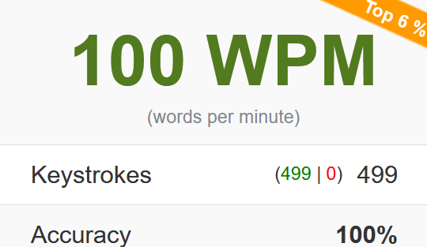
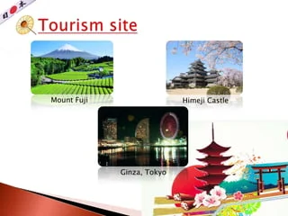
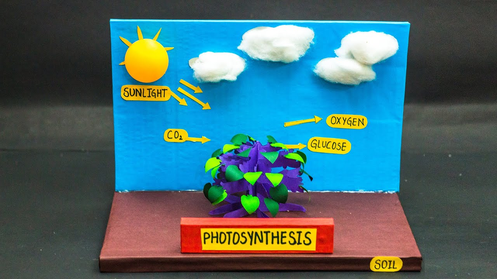

This was my highest ever WPM, I screamed when I got it because it took 4 class periods to get. This was around th same time I started my brand.

This was my First project I ever did for a grade. Looking at it looks funny when I look at my projects I do today!

This isnt my exact project but this was my first every BIO model. It took a while and i got a 4 on it! So cool to look at my begining of projects.

I will save the best for last. This one, was my first ever logo I made. Yes I know not the gratest, but still i love it. It is also what started my Brand!